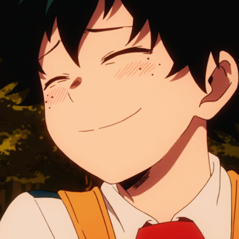
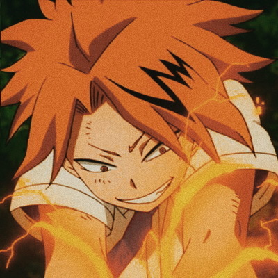
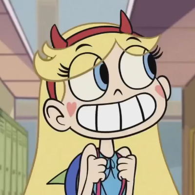
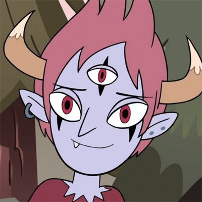

| Name |
Anime/Cartoon |
Age |
Backstory |
Comfort Character Reasoning |
Fun Fact |
Picture |
| Izuku Midoriya |
My Hero Academia |
16 |
In a world where most humans on the planet develop superpowers soon after they're born, a boy named Izuku Midoriya was one of the few who never developed any powers. As a child, Izuku dreamed to become a superhero like his idol, All Might, after he developed his power, or "Quirk". |
I relate to his character being he is kind and cares for others. He wants to help save people with a smile on his face. |
He loves to eat Katsudon |
 |
| Denki Kaminari |
My Hero Academia |
16 |
Denki is a Japanese student who, like many others his age, aspired to become a professional hero one day. His quirk, called Electrification, allowed him to generate electricity and manipulate it to a certain extent, although he still had a long way to go before mastering it. |
I relate to Denki because of his humor and ability to make people laugh without even trying. I also find his quirk to be exciting and powerful |
He has a funky taste in room decor. |
 |
| Star Butterfly |
15 |
Star vs The Forces of Evil |
She is a teenage princess of the kingdom of Mewni (located in another dimension) sent to Earth by her parents in order to learn how to use the royal magic wand. |
I relate to star because of her happy go-lucky personality and find her to be a character I see myself in. I enjoyed how she never backed down from a fight and showed mosnters who's boss |
She has a crush on her best friend named Marco Diaz. |
 |
| Tom Lucitor |
14 |
Star vs The Forces of Evil |
He is the demon prince of the Underworld and Star Butterfly's ex-boyfriend. |
Me and Tom are similar in our own ways but I mainly see myself in him due to his anger issues and love for cute things. |
He has a pet bunny that helps calm him. |
 |
| Orchid |
Orchidaceae |
Purple or White |
Summer to Spring |
Fertility |
They produce masses of pollen; which improves the chances of pollination |
 |
| Tulip |
Tulipa |
Yellow, Pink, Red |
Spring |
Love |
Their flower buds are known for being almost perfectly symmetrical. |
 |
| Sunflower |
Helianthus |
Yellow |
Summer |
Positivity and strength |
Each sunflower can contain as many as 1,000 to 2,000 seeds. |
 |
| Daffodil |
Narcissus |
White or Yellow |
Winter/Spring |
Rebirth and hope |
They are the birth flower for March. |
 |